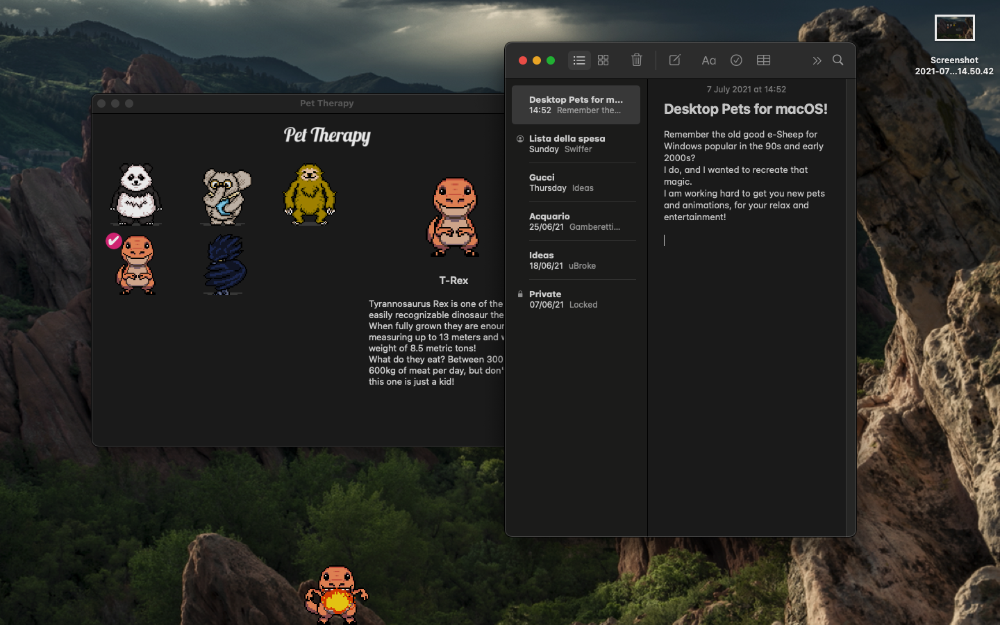
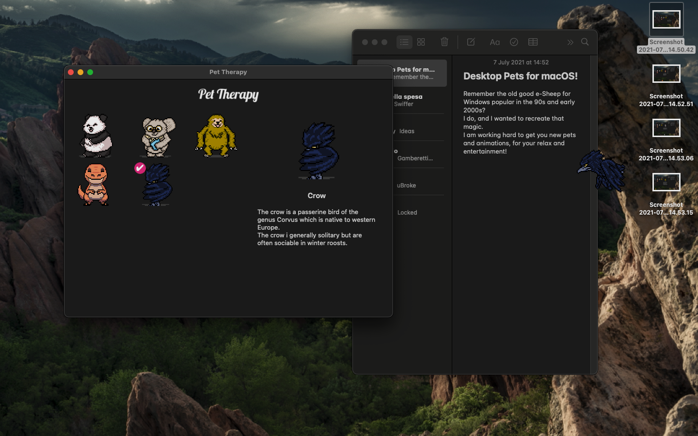
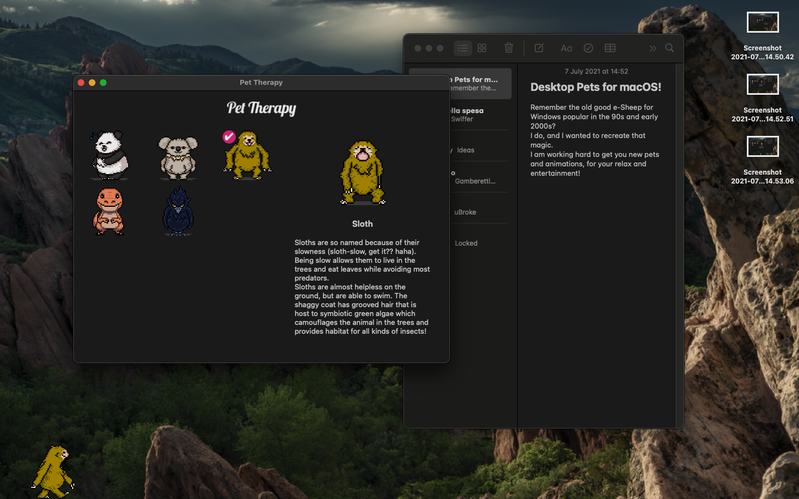
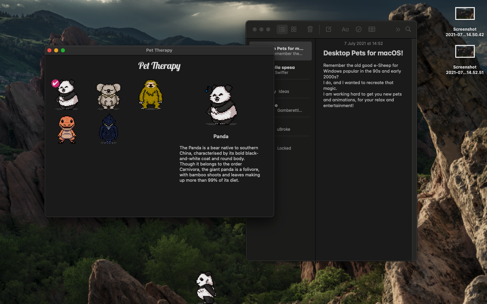
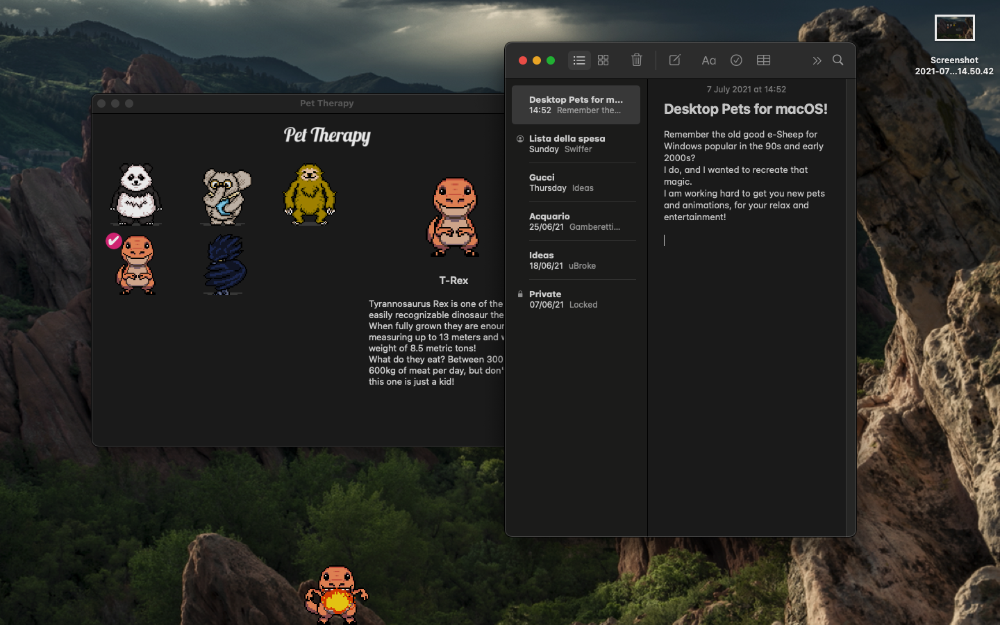
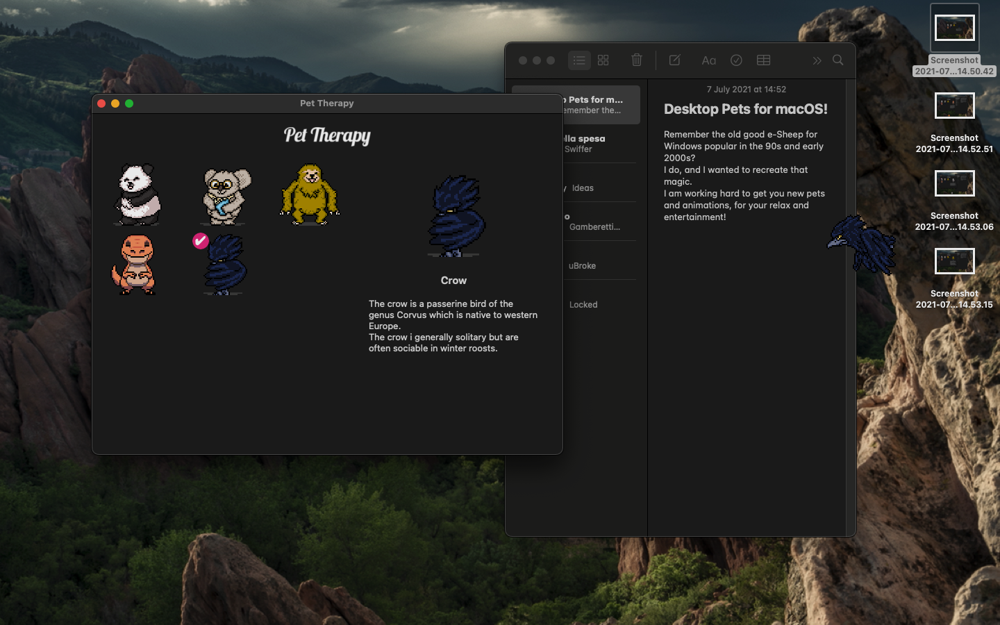
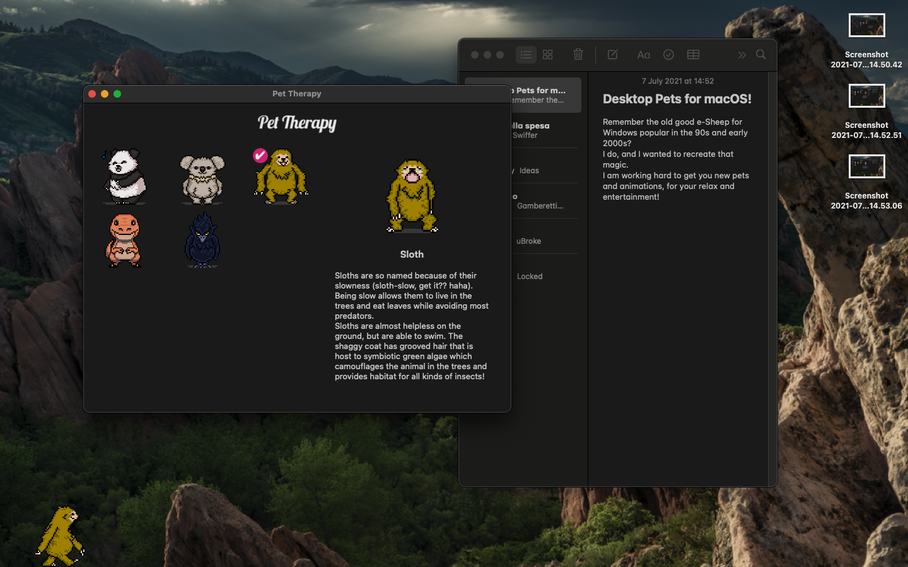
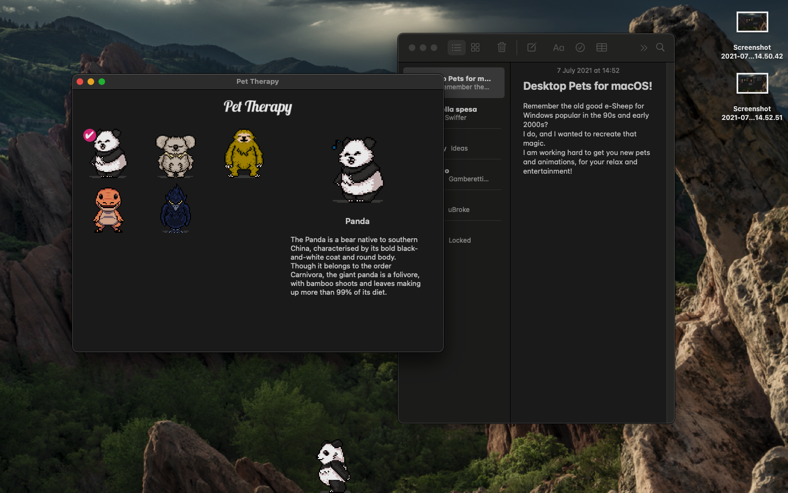

Desktop Pets
Remember the old good e-Sheep for Windows popular in the 90s and early 2000s?I do, and I wanted to recreate that magic...
So here I am working hard to get you new pets and animations, for your relax and entertainment!
Available on the App Store!

Gallery
 






